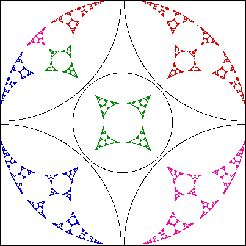

|  |
A collection of circles,
Specifically, the object we generate is the limit set.
| First, here is the definition of a limit set, along with some examples. |
| Here we construct limit sets for inversions in certain families of circles. |
| Here we illustrate the convergence of the limit set algorithm just described. |
| Example 1 For two circles, the limit set is just two points. Moreover, these points constitute the smallest set left unchanged by inversion in both circles. |
| Example 2 Two circles gives a limit set consisting of two points, so three circles gives a limit set consisting of three points, right? |
| Example 3 For four mutually disjoint circles, the limit set is a Cantor set wrapped around a circle. When the circles become pairwise tangent, the limit set is the circle perpendicular to the four inverting circles. |
| Example 4 With certain arrangements of five circles, the limit set appears to be made up of nonlinear copies of the Sierpinski gasket. |
| Example 5 Here is the limit set ofr a different arrangement of five circles. Does the general shape of the limit set look familiar? |
| Example 6 Finally, here is the limit set for inversion in five circles as depicted incorrectly by Fricke and Klein, and Mandelbrot's correction made 85 years later. This improved algorithm for generating limit sets is described here. |
Return to circle inversion fractals.